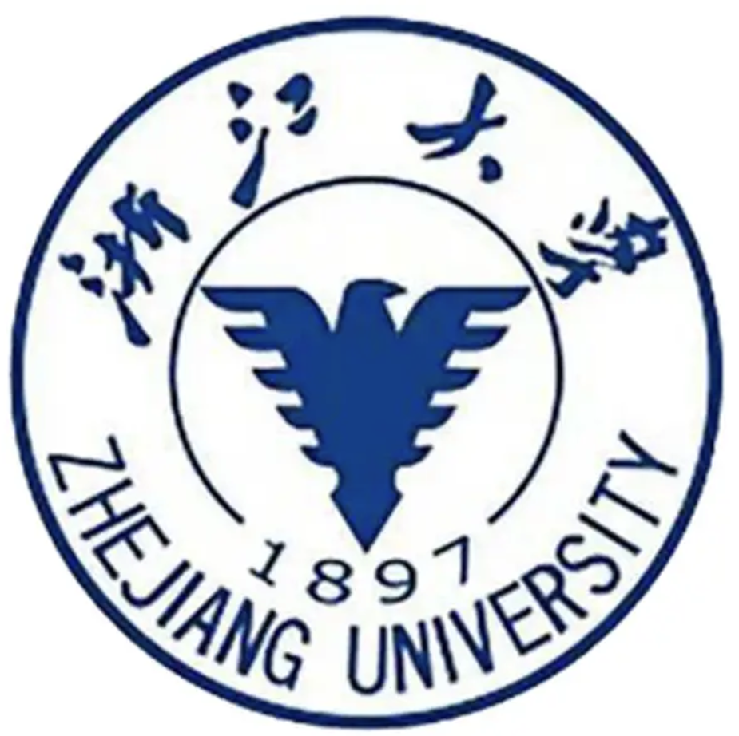

徐佳灵 (Jialing Xu)
 |
性别：女 |
关于我
浙江大学临床医学专业大四在读；热爱共产党，为入党积极分子；预计获得校研究生推荐免试资格；顺利通过四六级考试，英语水平优秀；具有扎实的理论基础，对科研有浓厚的兴趣。
我的研究兴趣主要包括:XXXXXXXXXXXXXXXXXXXXXXXXX等。
教育经历
|  | 本科 浙江大学 (2018.9 ~ 至今)
|
获奖经历
校三等奖学金(2019~2022)
第一届浙江大学百米定向接力赛第三名
校线上春季运动会一等奖
校二星志愿者
科研经历
生理科学实验
研究名称：双白术内酯对皮质下缺血性血管性痴呆小鼠的脑白质保护作用探究
主要工作：负责皮层和胼胝体取材以进行髓鞘相关蛋白检测和组织切片
学习成果：掌握文献阅读查找基本方法，熟悉实验室基本操作
组织经历
校医院“求是浙医”项目拓展部干事
浙大附属第一医院医生助理志愿者招募
对接浙大附属第一医院工作人员 志愿者日程安排